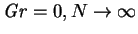
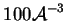
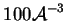
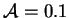
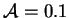
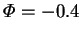

A feature of the model derived in chapter 2 is that the velocity
boundary condition is singular at the edges where the vapour source or sink
meet the nonslip connecting walls. This was the focus of the numerical
study of Jhaveri et al. (1981). They studied isothermal systems (i.e.
, but
 finite at
)
in plane cavities
(
finite at
)
in plane cavities
(
 ) ranging from
 to
) ranging from
 to
 . The Schmidt number
was taken as unity.
. The Schmidt number
was taken as unity.
They investigated the effect of the singularity at the corner by obtaining pairs of solutions, treating the corners as part of either the interface or the solid wall. They found that this had no effect on the vapour mass fraction field or the local Sherwood number, but did influence the velocity field in the vicinity of the corners.
The singularity at the corners is analogous to that found in a lid-driven cavity--see, for example, Mills (1965), Nallasamy and Krishna Prasad (1977), or the Fastflo Tutorial Guide (CSIRO 1997, p. 114) for a description of this problem. One problem can be locally converted to the other by the addition to the velocity of a suitable uniform transverse field. The pressure cannot be expected to be regular near such a corner, even in the viscous limit (Cahouet & Chabard 1988). This difficulty was not discussed by Jhaveri et al., as they reformulated the equation of motion in terms of vorticity and a stream-function, but will become apparent in the numerical solutions of chapter 5.
Of great interest is the run at  in the cavity of height
 ,
for which they report,
`the flow is basically one-dimensional except adjacent to the walls'. This
is the only prior evidence at finite mass transfer rates
of the existence of the conduction-diffusion
regime, defined and discussed in chapter 5.
,
for which they report,
`the flow is basically one-dimensional except adjacent to the walls'. This
is the only prior evidence at finite mass transfer rates
of the existence of the conduction-diffusion
regime, defined and discussed in chapter 5.